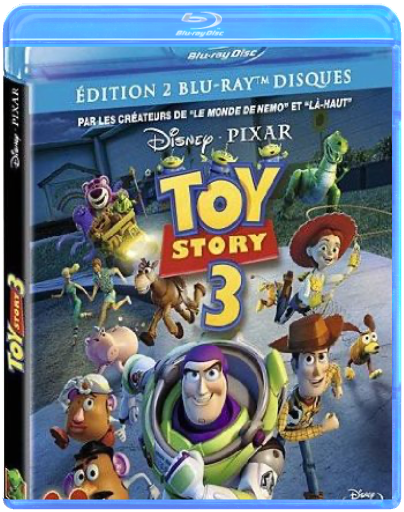
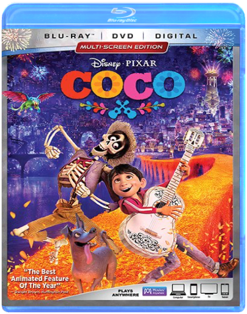

walt disney, 100 : toy story 3walt disney  Les créateurs des très populaires films Toy Story ouvrent à nouveau le coffre à jouets et invitent les spectateurs à retrouver le monde délicieusement magique de Woody, Buzz et leurs amis. Woody et Buzz savaient bien que leur cher Andy allait grandir un jour, mais que faire lorsque ce jour est arrivé ' Dans ce troisième chapitre, Andy se prépare à partir pour l'université, et ses fidèles amis les jouets se posent beaucoup de questions quant à leur avenir. Lee Unkrich (coréalisateur de Toy Story 2 et du Monde de Nemo) réalise ce film très attendu, et Michael Arndt, le scénariste oscarisé de Little Miss Sunshine, apporte son talent unique et sa sensibilité pleine d'humour à l'histoire. walt disney, 120 : cocowalt disney In Disney/Pixar's vibrant tale of family, fun and adventure, an aspiring young musician named Miguel (voice of newcomer Anthony Gonzalez) embarks on an extraordinary journey to the magical land of his ancestors. There, the charming trickster Héctor (voice of Gael Garci a Bernal) becomes an unexpected friend who helps Miguel uncover the mysteries behind his family s stories and traditions.  iron man 2 - édition combojon favreau iron man 2 - édition combojon favreau Le monde sait désormais que l'inventeur milliardaire Tony Stark et le super-héros Iron Man ne font qu'un. Malgré la pression du gouvernement, de la presse et du public pour qu'il partage sa technologie avec l'armée, Tony n'est pas disposé à divulguer les secrets de son armure, redoutant que l'information atterrisse dans de mauvaises mains. Avec Pepper Potts et James "Rhodey" Rhodes à ses côtés, Tony va forger de nouvelles alliances et affronter de nouvelles forces toutes-puissantes...  mia et le migoujacques-rémy girerd mia et le migoujacques-rémy girerd Alertée par un pressentiment, Mia décide de quitter son village natal d'Amérique du Sud pour partir à la recherche de son père. Ce dernier travaille sur un chantier gigantesque visant à transformer une forêt tropicale en luxueuse résidence hôtelière. Pour retrouver son papa, Mia doit franchir une lointaine montagne, entourée d'une forêt énigmatique et peuplée d'êtres mystérieux. Une expérience extraordinaire'  herspike jonze herspike jonze Los Angeles, dans un futur proche. Theodore Twombly, un homme sensible au caractère complexe, est inconsolable suite à une rupture difficile. Il fait alors l'acquisition d'un nouvel OS ultramoderne... En lançant le système, il fait la connaissance de Samantha, une voix féminine intelligente, intuitive et étonnamment drôle. Les besoins et les désirs de Samantha grandissent et évoluent, tout comme ceux de Theodore, et peu à peu, ils tombent amoureux... |


 Made with Delicious Library
Made with Delicious LibraryNancy, State zipflap congrotus delicious library Thomas, Julien